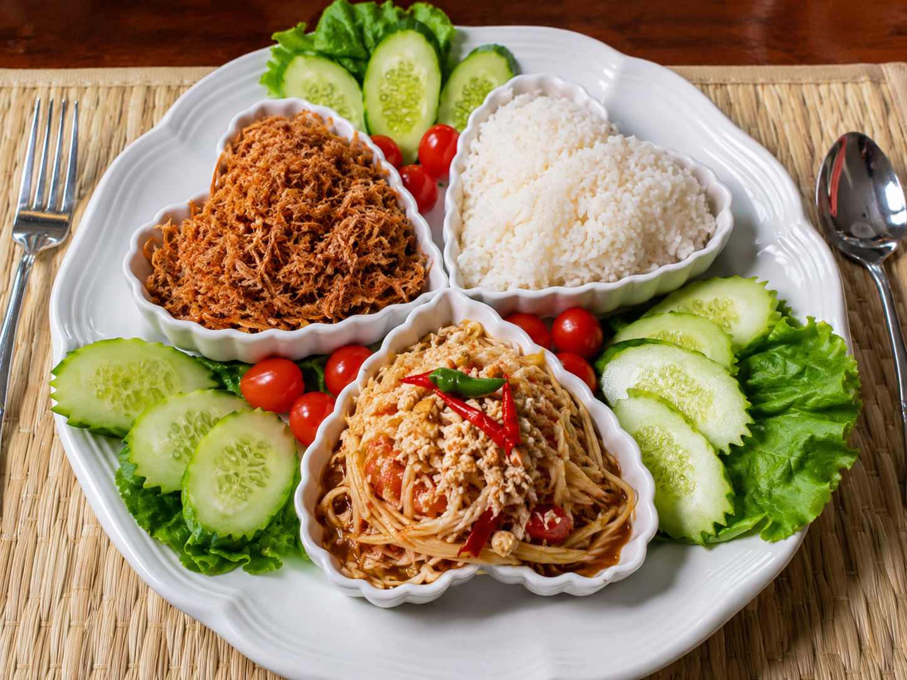
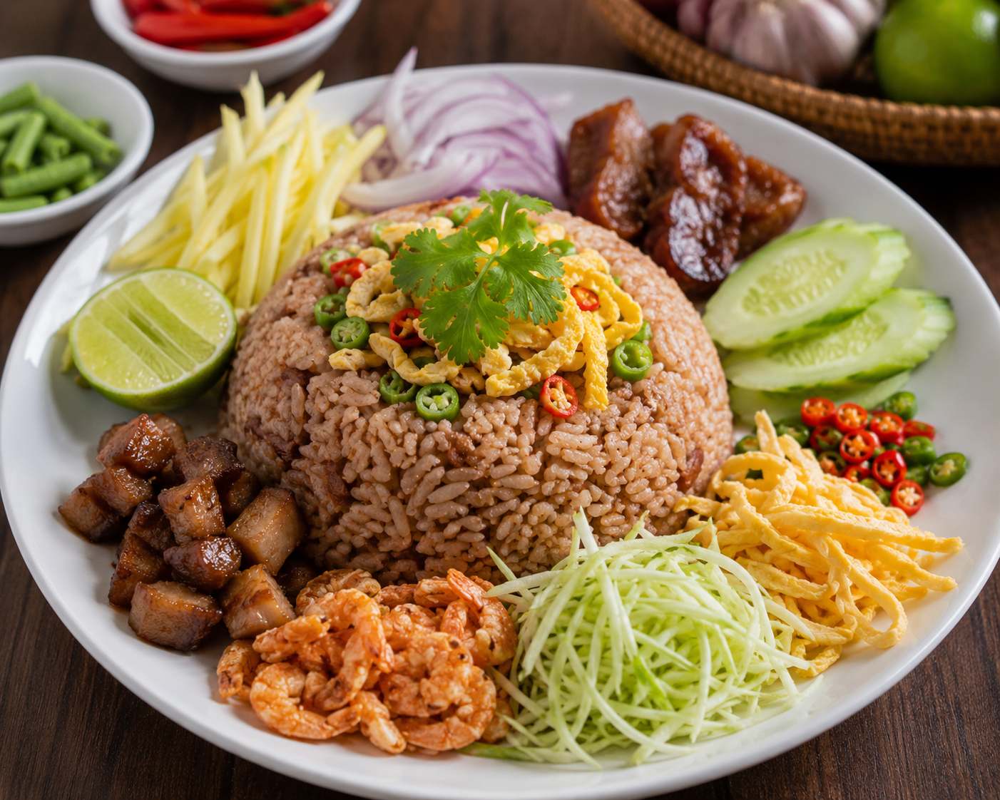
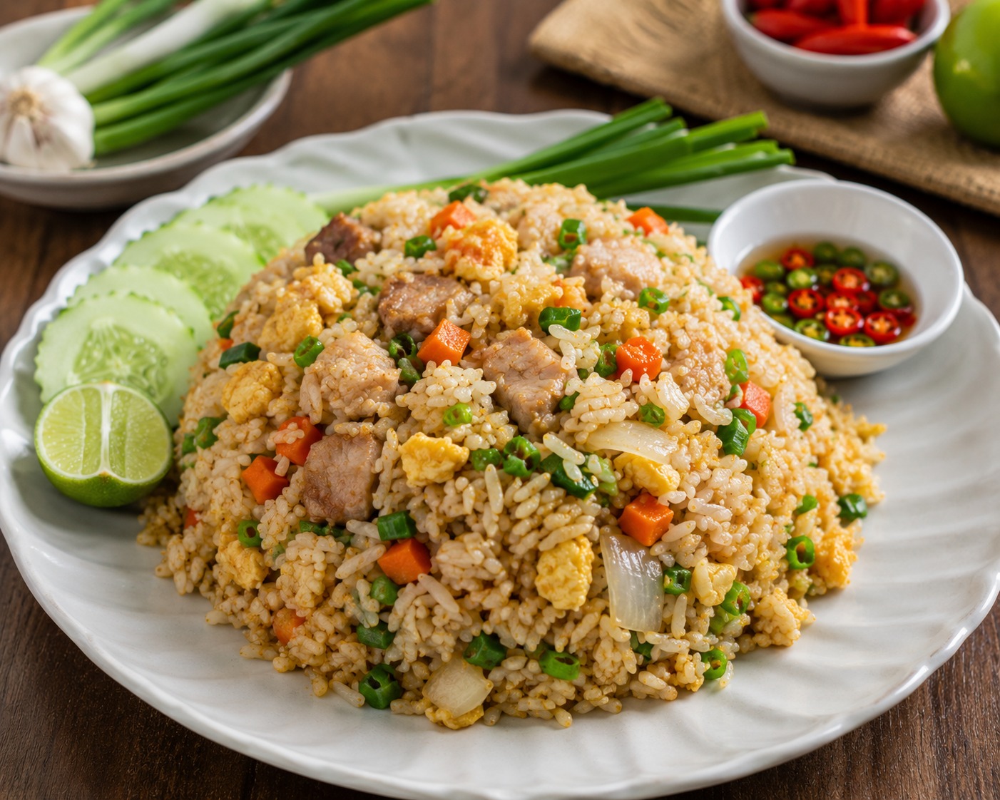
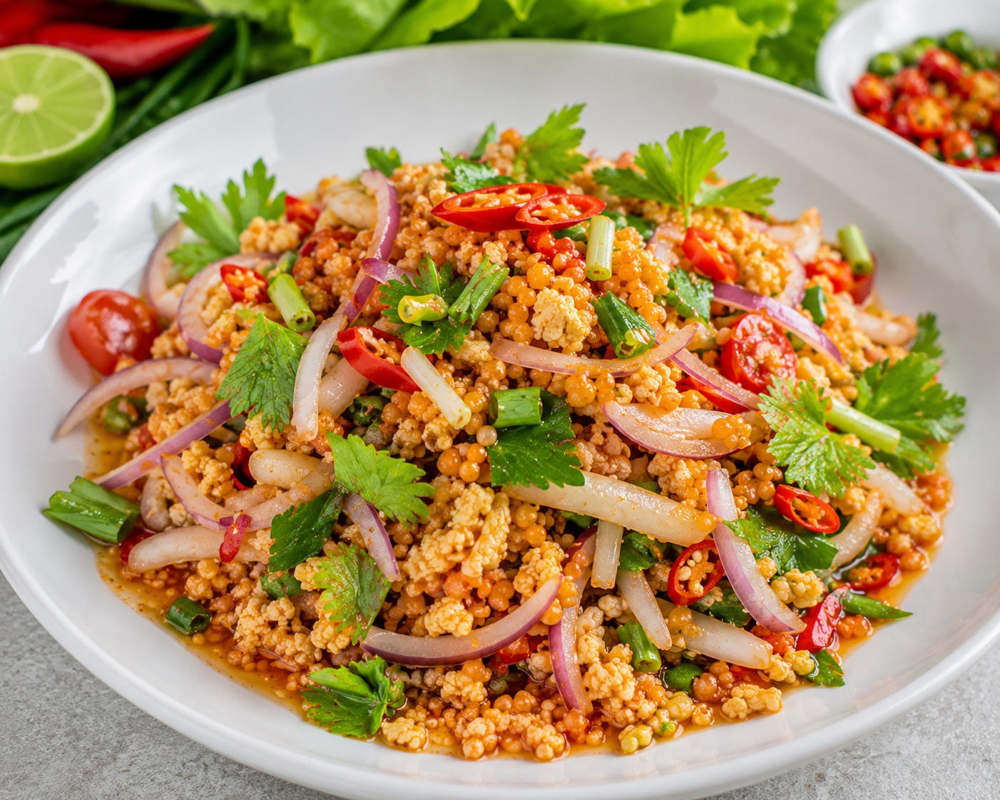
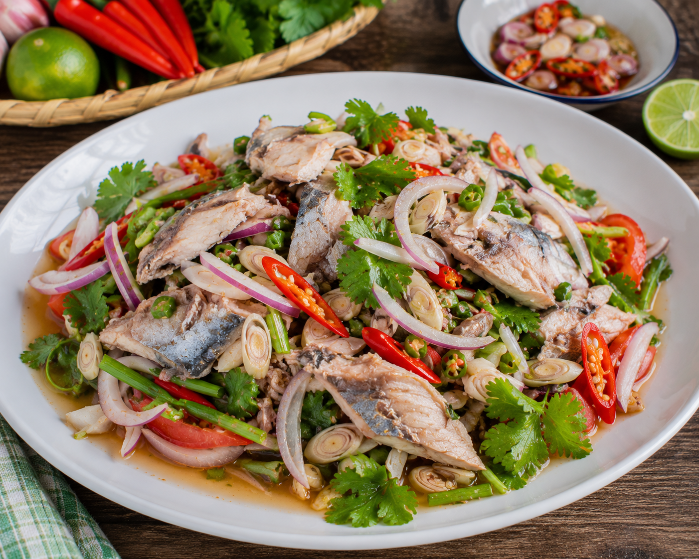

ประเภทอาหารจานเดียว

ข้าวมันส้มตำ
นิยมใช้เนื้อเค็มฝอยทอดกรอบ ไข่เค็ม และผักสด เป็นเครื่องแนม

ข้าวคลุกกะปิ
นิยมใช้หมูหวาน กุ้งแห้งทอดกรอบ ใบชะพลูหั่นฝอย และหอมแดง เป็นเครื่องแนม

ข้าวผัด
นิยมใช้แตงกวา ต้นหอม มะนาว พริกขี้หนู และมักมีแกงจืดเป็นเครื่องแนม

ยำไข่จะละเม็ด
นิยมใช้มังคุด เป็นเครื่องแนม

ยำปลาทูนึ่ง
นิยมใช้ผักกาดหอม และใบชะพลู เป็นเครื่องแนม